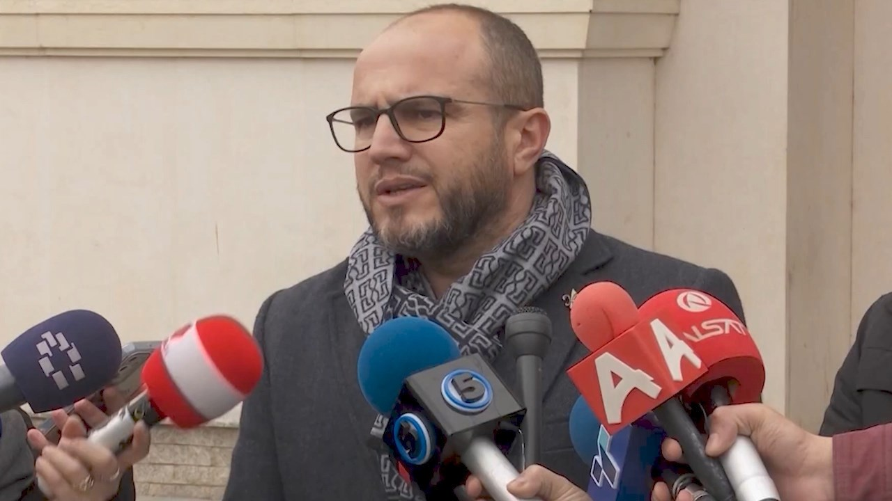
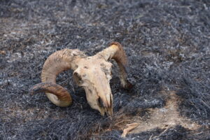
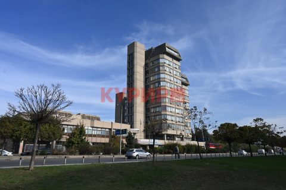
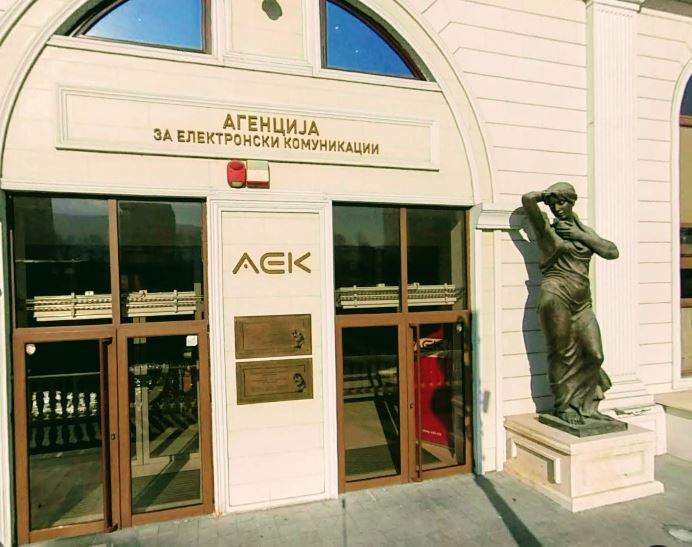
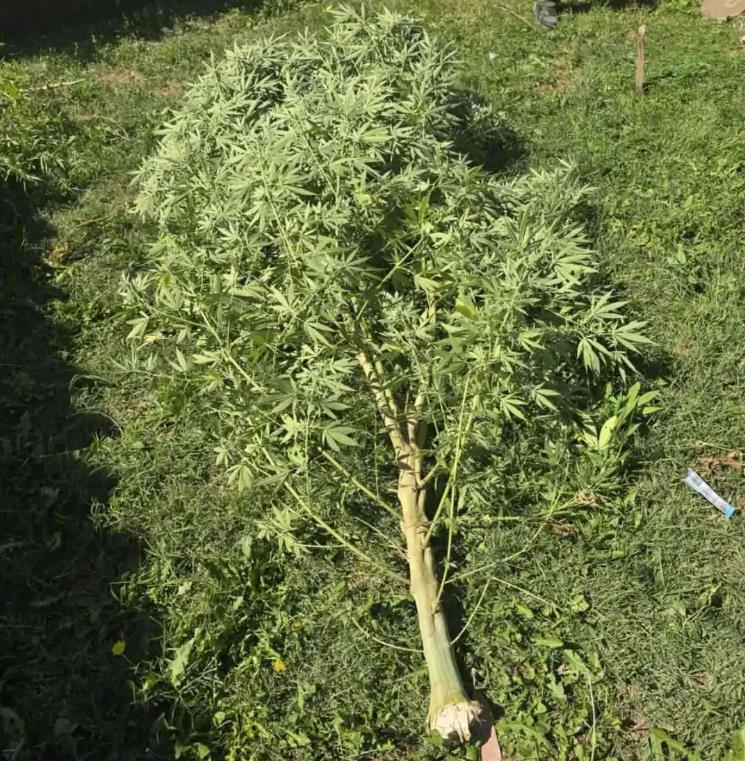
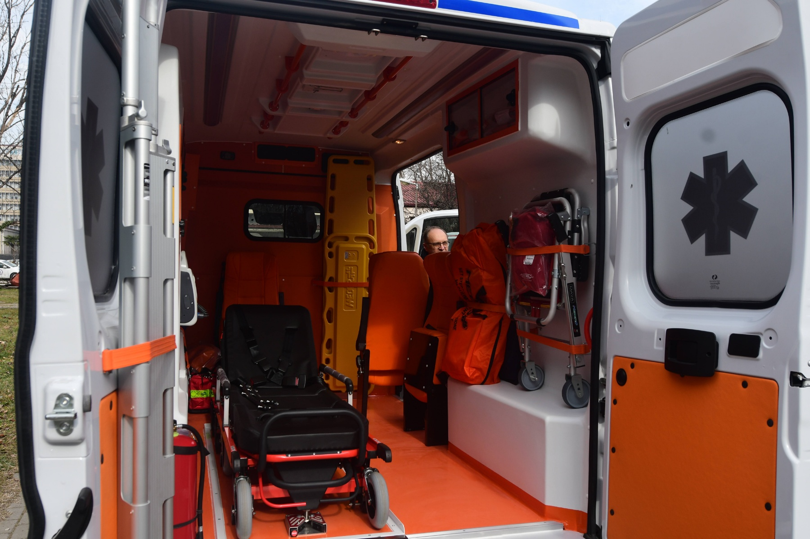
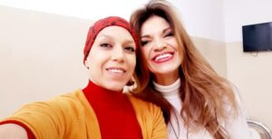
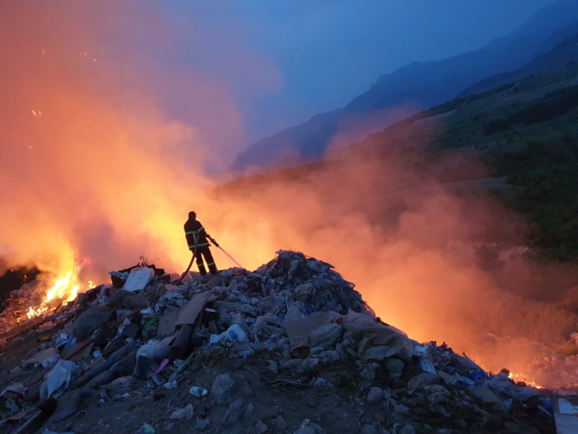
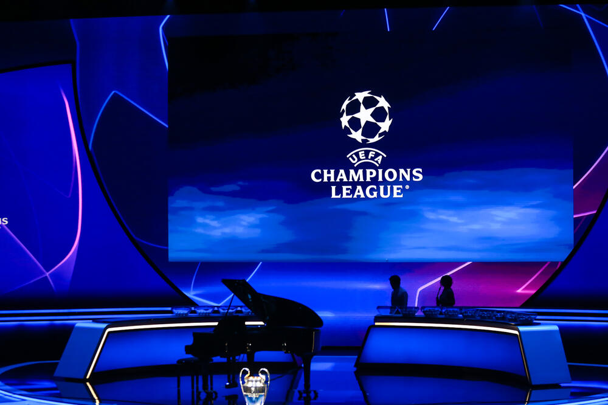

Најнови Вести
Филипче: Скандалот со АНБ им пукна како петарда во раката на ВМРО-ДПМНЕ, декласифицирајте да се види вистината
Скандалозна е изјавата на премиерот Мицкоски за загадувањето на воздухот деновиве, ниту една влада досега не се однесувала со проблемите на граѓан...
ФБИ пронајде пушка, чевли и отпечатоци од напаѓачот на Кирк
ФБИ објави фотографии од осомничениот за убиството на Чарли Кирк. Американското Федерално истражно биро (ФБИ) објави фотографии од осомничениот з...
ВМРО-ДПМНЕ ќе нема свој кандидат за Кочани, ќе го поддржи независниот Влатко Грозданов
ВМРО ДПМНЕ ги објави преостанатите имиња на кандидатите за градоначалници, во Кочани ќе го поддржат натпартискиот кандидат д р. Влатко Грозданов, ...
Двајца работници го загубија животот, еден во Делчево и еден во Кавадарци
ОВР Кавадарци е пријавено дека Г. Х. Кина, додека извршувал работни задачи во фабрика во Кавадарци, бил удрен од кран и од здобиените повреди почи...

Обвинителите Хајрулахи и Цветановски жестоко ја отфрлаат одговорноста
Основното јавно обвинителство (ОЈО) Штип, по целосно спроведена истражна постапка и обезбедени докази, поднесе обвинение против суспендираниот шеф...
Македонија
Филипче: Скандалот со АНБ им пукна како петарда во раката на ВМРО-ДПМНЕ, декласифицирајте да се види вистината
Скандалозна е изјавата на премиерот Мицкоски за загадувањето на воздухот деновиве, ниту една влада досега не се однесувала со проблемите на граѓан...
ВМРО-ДПМНЕ ќе нема свој кандидат за Кочани, ќе го поддржи независниот Влатко Грозданов
ВМРО ДПМНЕ ги објави преостанатите имиња на кандидатите за градоначалници, во Кочани ќе го поддржат натпартискиот кандидат д р. Влатко Грозданов, ...
Обвинителите Хајрулахи и Цветановски жестоко ја отфрлаат одговорноста
Основното јавно обвинителство (ОЈО) Штип, по целосно спроведена истражна постапка и обезбедени докази, поднесе обвинение против суспендираниот шеф...

Забрана за движење на територија на депонијата „Вардариште“
Управувачкиот комитет за координација и управување со системот за управување со кризи, на денешната 7 ма седница, предложи до Владата, а Влада усв...
Поднесено обвинение за депониите во Вардариште, ОЈО Скопје постапува и во други предмети за загaдување со отпад
Основното јавно обвинителство Скопје поднесе обвинение против три лица за кривично дело – Загрозување на животната средина и природата со отпад. ...
Свет
ФБИ пронајде пушка, чевли и отпечатоци од напаѓачот на Кирк
ФБИ објави фотографии од осомничениот за убиството на Чарли Кирк. Американското Федерално истражно биро (ФБИ) објави фотографии од осомничениот з...
Трамп постхумно ќе го одликува Кирк со Претседателски медал на слободата
Многу ни недостига, но не се сомневам дека гласот на Чарли и храброста што ја донесе во срцата на безброј луѓе, особено млади луѓе, ќе продолжат д...
Стотина медиумски организации го повикаа Трамп да не ги ограничува визите за странските новинари
Стотина меѓународни медиумски и новински организации денеска ја повикаа американската администрација да се откаже од планот за скратување на траењ...
Германскиот канцелар го осудува „агресивното однесување“ на Русија во Полска
Русија загрози човечки животи во земја која е дел од НАТО и ЕУ, рече Мерц во Берлин. Тој ги опиша синоќешните настани како неодговорен чин кој е ...
Видео: Поплави на Бали, загинаа најмалку девет лица
Поплавите на индонезискиот остров Бали оваа недела убија најмалку девет лица, ги блокираа главните патишта во главниот град и го нарушија животот ...
Економија

Поевтинуваат секојдневните плаќања за граѓаните и за компаниите
Активностите на Народната банка за намалување на надоместоците на банките за електронските плаќања заради нивна поголема достапност и користење ве...
Инфлацијата во август 4,4 проценти на годишно ниво, 0,2 на месечно
Трошоците на животот во август годинава, во однос на август лани, се зголемиле за 4,4 проценти, а цените на мало за 4,1 процент. Цените на мало в...
Мицкоски: За прв пат на месечно ниво имаме базична инфлација во негатива
Мицкоски: За прв пат на месечно ниво имаме базична инфлација во негатива » :. Премиерот Мицкоски нагласи дека ако се направи длабинска анализа ќе...

По изборите ќе биде официјализиран третиот мобилен оператор, унгарскиот 4iG
Постапката за трет мобилен оператор заврши, директорот на АЕК ќе ја донесе конечната одлука по изборите. По донесувањето на решението за завршува...
Средба на гувернерот Славески со амбасадорката на Јапонија во Македонија
Гувернерот на Народната банка, Трајко Славески, оствари средба со амбасадорката на Јапонија во Република Северна Македонија, Нејзината Екселенција...
Хроника
Двајца работници го загубија животот, еден во Делчево и еден во Кавадарци
ОВР Кавадарци е пријавено дека Г. Х. Кина, додека извршувал работни задачи во фабрика во Кавадарци, бил удрен од кран и од здобиените повреди почи...

Кривична пријава против двајца скопјани, одгледувале канабис во нивните дворови
Надворешната канцеларија за криминалистички работи Виница поднесе кривична пријава против Д. С. Виница поради постоење основи на сомнение за сторе...

Охриѓанец паднал од третиот кат на зградата во која престојувал
СВР Охрид е пријавено дека К. Д. Охрид паднал од третиот кат од зградата каде престојувал на улица „Даме Груев” во Охрид. Еразмо“ во Охрид, каде ...

Случајот „Онкологија“ продолжува против поранешниот директор Васев и двајца онколози
Во Основниот кривичен суд Скопје, денеска, со сведоци на Основното јавно обвинителство продолжи судењето против поранешниот директор на Клиниката ...

Пожарот во Дрисла се гаси со специјална пена, а Вардариште го чува агенција за обезбедување
Нашата улога е гасење на пожарите и спречување на понатамошно чадење на овие две депонии, рече Ангелов. На седница на Управувачкиот комитет, тело...
Спорт

УЕФА: Финалето на ЛШ во 2027 на стадионот на Атлетико Мадрид
УЕФА: Финалето на ЛШ во 2027 на стадионот на Атлетико Мадрид » :. Финалниот натпревар од фудбалската Лига на шампиони во 2027 година ќе се одигра...

Дончиќ по поразот од Германија: Едноставно сум многу лут, можев да направам повеќе
Дончиќ по поразот од Германија: Едноставно сум многу лут, можев да направам повеќе » :. Најголемата ѕвезда на словенечката кошаркарска репрезента...

Ристовски: Спортот е двигател на здраво и просперитетно општество
Вицепремиерот и министер за транспорт, Александар Николоски, во денешното обраќање на „Регионален спортски самит Скопје 2025“ најави уште поголеми...
Роналдо ја доби наградата „Најдобар играч на сите времиња“
Кристијано Роналдо ја освои наградата Најдобар играч на сите времиња. Фудбалерот на Ал Наср, Кристијано Роналдо, ја доби наградата „Најдобар игра...

Хуан Дејвис се врати во МЗТ Скопје
Македонскиот шампион МЗТ Скопје Аеродром, повторно во своите редови ќе го има американскиот кошаркар Хуан Дејвис. Дејвис треба да ја засили играт...